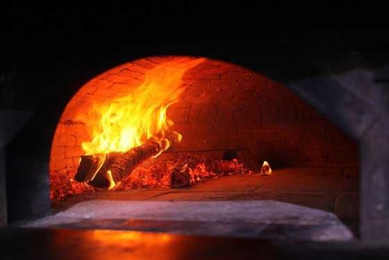
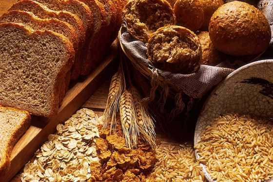
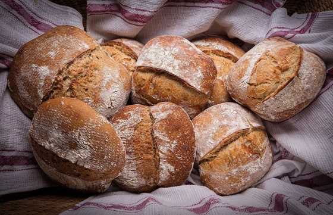

small bakery
小さなパン屋
atelier hasamu
焼くのも、売るのも、一人。
手渡せる分だけを、ていねいに。
新潟県糸魚川市田海
掲載写真はフリー素材のイメージ写真であり、店舗の実際のパンや店内ではありません。
お店の想い
atelier hasamu は、糸魚川市田海にある小さなパン屋です。Instagramのプロフィールには「焼くのも、売るのも、私一人。」「妥協せず、一人で手渡せる分だけを」とあり、ピアノ弾きの店主が一人でパンを焼いていると紹介されています。
大きく広げるより、自分の手が届く範囲で。そんな姿勢を、この1ページの静かなつくりにも映しました。
店名の意味は公開情報では確認できていません。


パンと焼き菓子
Instagramでは「香りと味のハーモニー」「至福のパン」と紹介され、パンのほか焼き菓子の投稿も見られます。ご予約の案内も出ています。


- 品書き・価格:準備中
- 営業日・営業時間・定休日:準備中(最新情報はInstagramをご確認ください)
- 電話:準備中




口コミ
イメージ例小さなお店なので、早めに行くのがおすすめ。焼きたての香りに、つい予定より多く選んでしまいました。
イメージ例素朴なのに味に奥行きがあって、翌朝のトーストまで楽しみでした。
イメージ例一人で営んでいるぶん、一つひとつ手渡してもらえる安心感があります。
上記は制作側が作成したイメージ例であり、実在の声ではありません。

アクセス
〒949-0303 新潟県糸魚川市田海5238
電話:準備中 / 駐車場:準備中